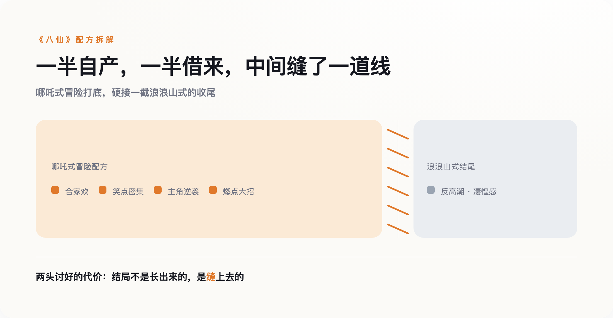

本文涉及影片结局与片尾彩蛋内容，介意剧透的读者建议观影后再读。
导语
看完《八仙！》的观众，如果留到片尾彩蛋，会发现一个熟悉的转折：前一百多分钟还在合家欢式地打怪升级，结尾却突然收进一种无奈和凄惶的调子里——这个处理方式，被不少观众认出，和去年夏天《浪浪山小妖怪》的手法高度相似。主流报道这几周都在讲同一件事：《八仙》是暑期档黑马，票房破了十亿。这个判断没有错，但它漏掉了豆瓣长评区和知乎讨论区里正在发生的另一场争论——这部电影真正讽刺的地方，不是它抄了《哪吒》系列验证过的配方，是连"如何显得不像哪吒"，它也抄成了配方的一部分。
一、黑马是真的，但没那么神
先把事实摆清楚。《八仙！》改编自"八仙过海"传说，把叙事重心放在八位神仙成仙前的凡人阶段——吕洞宾集结了钟离权、曹国舅、韩湘子这群没有法力的市井凡人，靠一套荒谬的计划去蓬莱盗宝救世。7月18日提档上映，截至8月1日，票房已经破10.76亿元，登顶今年国产动画票房榜，豆瓣开分8.3，猫眼9.7，淘票票9.6。
但"黑马"这个词容易让人误以为它是这个暑期档的第一。它不是。截至7月底，暑期档大盘破了65亿，真人电影《功夫女足》票房已经超过18亿，明显压过《八仙》。《八仙》的位置更准确的说法是：一部原本没被寄予厚望的动画片，票房预测随着口碑发酵一路上修，最终逼近二十亿区间。这确实是黑马，但不是霸主。
《八仙》是导演牟正洋自编自导的首部动画长片，此前他在《深海》剧组担任过剧本策划。《深海》走的是国产动画里少见的路线——用更私人化、更内向的方式讲一个抑郁女孩的故事，风格化程度极高，是那种不太可能被简单拆解成"笑点+反转+燃点"模块的作品。参与过这样一部作品的人，转身交出的首部独立作品却是一部近乎教科书级别的配方式成功案例，这个反差本身，比任何行业评论都更直接地说明了：这套配方好用到什么程度。
二、豆瓣长评区，有一种截然不同的读法
主流媒体这几周的报道，标题几乎清一色是"国产动画又添爆款""文化自信再显威力"。但如果翻到豆瓣的长评区，会看到一篇标题更扎眼的评论，指控《八仙》是"一部精准预制了市面上所有已知动画电影爆点的投机之作"——综合网络上对这篇评论的转述，它列举的具体控诉是：笑点有、方言梗有、反差萌有、包袱有、伏笔有、回收有、反转也有，几乎把过去几年国产动画爆款验证过的每一个元素都凑齐了，唯独没有一个立得住的故事内核。
另一种更节制的说法叫"缝合怪"——神话IP、侠盗类型、喜剧元素、职场式讽刺，被工整地拼接在一起。钛媒体一篇评论文章倒是正面回应了这个标签，但给出的是辩护角度：工业化能把这么多元素"缝"得严丝合缝，本身就是一种能力，是国产动画走向成熟的"压舱石"。这个辩护有它的道理，但它没有回答那篇长评真正在问的问题：当一部电影能被精确拆解成"笑点+方言+反转+燃点"这几个可复制的模块时，观众记住的到底是这个故事，还是这套模块本身。
三、最讽刺的一层，藏在片尾彩蛋里
如果说前面这些争论还只是"抄了哪吒配方"这个层面的老话题，真正让人后背一凉的，是片尾彩蛋的处理。《八仙》整部电影走的是标准的哪吒式路线：合家欢、笑点密集、主角团逆袭、结尾放大招——这套配方从《西游记之大圣归来》确立雏形，被《哪吒》系列反复验证，是过去十年国产动画最稳的商业保险。但到了片尾彩蛋，画风突然一转，收进了一种更内敛、更悲凉的调子——这个处理，被不少观众认出，和去年《浪浪山小妖怪》那种刻意避开"英雄变身燃点"、走小人物式反高潮结局的手法高度相似。
这就是那层最锋利的讽刺：《浪浪山》去年之所以打动人，恰恰是因为它没有走哪吒式的套路，它用反高潮本身对抗了"必须有燃点"这条不成文的规则。而《八仙》把这个"反套路"的动作，直接当成配方的最后一块拼图，缝进了自己那套本就是套路化的叙事里——用一场标准的哪吒式冒险取悦想看爽片的观众，再用一个借来的反高潮结尾取悦想看"深度"的观众，两头都不放过。它抄的不再只是"如何燃"，还多抄了一层"如何显得自己不俗气"。

四、配方不是万能的，别急着把成功全记在它头上
这里要接住一个显而易见的反驳：既然配方这么好用，是不是照抄就能赚钱？数据给出的答案是否定的。同样押注神话IP、走类似路线的《二郎神之深海蛟龙》，豆瓣只有4.8分，票房大约400万元，几乎无声无息地下映了。北京电影学院副校长、中国动画研究院院长孙立军公开谈过，行业真正的瓶颈是叙事创新不足；资深影评人饶曙光也提醒过，神话IP是一座富矿，但不该是唯一矿脉。
《二郎神》的失败说明，光有配方接不住一部电影——制作水准、笑点的执行密度、演员配音的节奏感，这些更基础的手艺活，才是《八仙》和《二郎神》之间真正的分水岭。这篇文章想说的不是"《八仙》不好看，因为它抄了配方"。市井凡人靠一套荒谬计划去盗宝这条主线，本身就比"天生神力的少年打怪"新鲜，笑点的密度和节奏也确实撑住了144分钟——猫眼9.7分是真实的观众反馈，很多人确实笑出了声、看得很开心。想说的是另一件事——好看这件事，一旦被拆解成一套可以被精确复制的模块，接下来每一部想复制它的电影，都得面对同一个问题：观众迟早会认出这套模块，就像这次认出片尾彩蛋一样。
五、没人愿意谈的，才是真正该谈的
主流报道这几周反复讲"黑马诞生""国产动画又一里程碑"，却没有一篇正面回应豆瓣和知乎里那些"缝合怪""投机之作"的声音。这个沉默本身，比任何一篇通稿都更值得琢磨——不是说批评一定对，是这场讨论本来可以更诚实一点：一部电影可以既好看又是工业配方的产物，这两件事不矛盾，但假装后者不存在，才是真正在糊弄观众。
如果这个苗头继续下去——连"如何显得不像上一部爆款"都能被下一部电影提前学走——那么下一部想靠复制《八仙》成功的动画电影，可能还没意识到，自己最想避开的那种雷同，也早就是一种可以被复制的雷同。